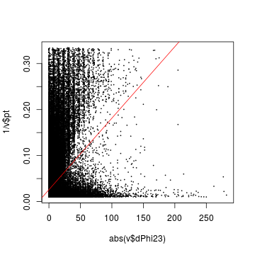
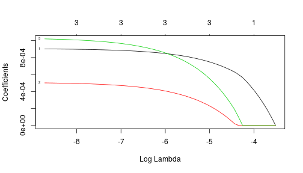

Input data
Model selection
Trees
The 20 predictors (no input from RPC system yet):
| type | trait | measurements with 4 stations | allowed values |
|---|---|---|---|
| \(\Delta\phi\) | continuous | 1-2, 1-3, 1-4, 2-3, 2-4, 3-4 | [-512 - +512] |
| \(\Delta\theta\) | continuous | 1-2, 1-3, 1-4, 2-3, 2-4, 3-4 | [-7 - +7] |
| CLCT_Pattern | categorical | 1, 2, 3, 4 | [2,3,4,5,6,7,8,9,10] |
| FrontRear | categorical | 1, 2, 3, 4 | [0,1] |
Response variable: \(1/p_T\) to rank up accuracy of low \(p_T\) regression
\[ RSS = \Sigma^N_{i=0} (y_i - \hat{y}_i)^2, RMSE = \sqrt{\frac{1}{N}\Sigma^N_{i=0}(y_i - \hat{y}_i)^2} \]
The more predictors (freedoms) one uses to build a model the better it fits training data
Metrics above will always favor more complex models fitting in-sample noise
\(F\)-statistics (lack-of-fit sum-of-squares over pure error sum-of-squares): \[ F = \frac{(RSS_0-RSS_1)/(p_1-p_0)}{RSS_1/(N-p_1-1)} \sim F_{p_1-p_0,N-p_1-1} \rightarrow \chi^2_{p_1-p_0}/(p_1-p_0) \]
Adjusted \(R^2\) (regular \(R^2\) penalized for model complexity):
\[ Adjusted~R^2 = 1 - \frac{RSS/(N-p-1)}{TSS/(N-1)} \]
Analysis of Variance Table
Model 1: 1/pt ~ abs(dPhi12)
Model 2: 1/pt ~ abs(dPhi12) + abs(dPhi23)
Model 3: 1/pt ~ abs(dPhi12) + abs(dPhi23) + abs(dPhi34)
Model 4: 1/pt ~ abs(dPhi12) + abs(dPhi23) + abs(dPhi34) + abs(dPhi13)
Model 5: 1/pt ~ abs(dPhi12) + abs(dPhi23) + abs(dPhi34) + abs(dPhi13) +
abs(dPhi14)
Model 6: 1/pt ~ abs(dPhi12) + abs(dPhi23) + abs(dPhi34) + abs(dPhi13) +
abs(dPhi14) + abs(dPhi24)
Res.Df RSS Df Sum of Sq F Pr(>F)
1 311344 169.88
2 311343 169.87 1 0.0107 23.072 1.562e-06 ***
3 311342 161.19 1 8.6854 18758.408 < 2.2e-16 ***
4 311341 156.31 1 4.8794 10538.338 < 2.2e-16 ***
5 311340 156.21 1 0.0960 207.349 < 2.2e-16 ***
6 311339 144.16 1 12.0570 26040.235 < 2.2e-16 ***
---
Signif. codes: 0 '***' 0.001 '**' 0.01 '*' 0.05 '.' 0.1 ' ' 1
Linear fit does not do well for dPhi23 (also seen as low \(F\)-statistics above):
plot(abs(v$dPhi12), 1/v$pt, cex=.1)
abline(lm(1/pt~abs(dPhi12),v),col="red")
plot(abs(v$dPhi23), 1/v$pt, cex=.1)
abline(lm(1/pt~abs(dPhi23),v),col="red")

Lasso calculates model parameters \(\beta\) by minimizing regularized loss \(RSS + \lambda\Sigma_{i=1}^p|\beta_i|\)
x = model.matrix(1/pt ~ abs(dPhi12) + abs(dPhi23) + abs(dPhi34) - 1, v)
plot( glmnet(x, 1/d$pt), xvar="lambda", label=T )

dPhi12 (#1) is the last suppressed with growing \(\lambda\), while dPhi23 (#2) is sacrificed first
Best subset selection “switches on” (shades of gray) predictors as follows:

The most important predictors in a linear model (of my choice) are dPhi, clct1 and fr1
Simple decision tree: just crude partitioning of the predictor space
Boosting (in BDT):
Bagging or Bootstrap aggregation (in Random Forest or RF used through the rest of this study):
Cross-validation (repetitive testing of a model on data never seen before) is part of RF training
Absolute predictor's importance = difference in predictive measure (e.g. MSE) with the original
training dataset and a dataset with this predictor being randomly 'permuted':

dPhi predictors are the winners (with the first station been most important) followed by clct1
I need to fit the model above into our 2Gb Look Up Table addressed with just 30 bits
Required transformations:
Following (potentially sub-optimal) scheme, inspired by current code, is used in next slides:
| \(\Delta\phi_{1-2}\) | \(\Delta\phi_{1-3}\) | \(\Delta\phi_{1-4}\) | \(\Delta\phi_{2-3}\) | \(\Delta\phi_{2-4}\) | \(\Delta\phi_{3-4}\) | S(\(\Delta\phi_{2-3/1-2}\)) | S(\(\Delta\phi_{3-4/1-2}\)) | \(\Delta\theta_{1-2}\) | clct1 |
|---|---|---|---|---|---|---|---|---|---|
| [6:0] | – | – | [6:0] | – | [6:0] | [0] | [0] | [1:0] | [1:0] |


Ranking predictors by their importance is an easy job, fitting them in 30 bits is difficult
\[ \Large Backup \]
| \(\Delta\phi_{2-3}\) | \(\Delta\phi_{2-4}\) | \(\Delta\phi_{3-4}\) | clct2 | clct3 | clct4 |
|---|---|---|---|---|---|
| [6:0] | – | [6:0] | [1:0] | [1:0] | [1:0] |